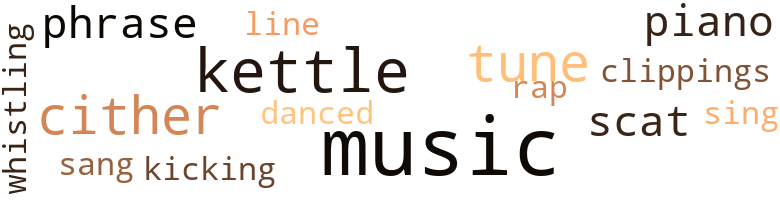
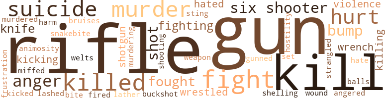
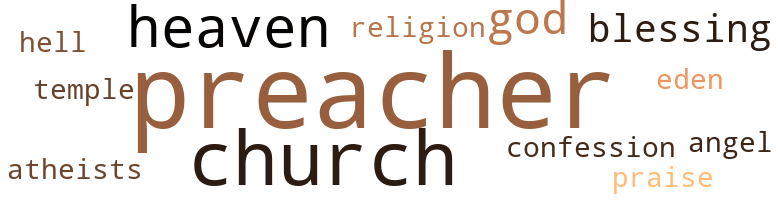

Undoing of Miss Abigail Wrigley: A Country Mystery (The), by Hathorn, Christine (1973)
32 music-related terms matched in this text.
Most frequent terms in this topic: music (7); kettle (4); cither (3); tune (2); piano (2)
clipping.n.01
Definition: an excerpt cut from a newspaper or magazine
| word | sentence |
|---|---|
| clippings | I even showed him the newspaper clippings about it - biased as they were - and let him know that he was my nephew . |
dance.v.03
Definition: skip, leap, or move up and down or sideways
| word | sentence |
|---|---|
| danced | His brown eyes danced with anticipation . |
kettle.n.04
Definition: a large hemispherical brass or copper percussion instrument with a drumhead that can be tuned by adjusting the tension on it
| word | sentence |
|---|---|
| kettle | " Then wo n't you have a seat in the parlor , and I 'll put the tea kettle on . |
| kettle | Abbie started to pump water into the kettle . |
| kettle | She set the kettle over a flame . |
| kettle | When she returned the tea kettle was whistling . |
kick.v.04
Definition: kick a leg up
| word | sentence |
|---|---|
| kicking | Be like kicking a man while he 's down . " |
music.n.01
Definition: an artistic form of auditory communication incorporating instrumental or vocal tones in a structured and continuous manner
| word | sentence |
|---|---|
| music | " How about some music ? " |
| music | The sound of country and Western music reached their ears . |
| music | But the music was n't the only thing making him happy now . |
| music | He was n't satisfied with the music , though . |
| music | He peeked in on Thomas and saw that he was absorbed in the music . |
| music | But I like piano music . " |
| Music | Music came from somewhere in the background , but it was n't his type . |
| music | Walter could stand the music . |
phrase.n.02
Definition: a short musical passage
| word | sentence |
|---|---|
| phrases | He spoke haltingly , like he was giving his words and phrases careful thought before he said them . |
| phrase | " Calm down , boy , " Zeke offered a repetitious phrase . |
piano.n.01
Definition: a keyboard instrument that is played by depressing keys that cause hammers to strike tuned strings and produce sounds
| word | sentence |
|---|---|
| piano | " And why do n't you have some candy , too , " she offered , and handed him a dish that was sitting on top of a small piano . |
| piano | " Doyou play ? " he asked about the piano . |
rap.n.05
Definition: genre of African-American music of the 1980s and 1990s in which rhyming lyrics are chanted to a musical accompaniment; several forms of rap have emerged
| word | sentence |
|---|---|
| rap | " Well , then , a murder rap show wo n't make it look none the better , " Haynes needled . |
scat.n.01
Definition: singing jazz; the singer substitutes nonsense syllables for the words of the song and tries to sound like a musical instrument
| word | sentence |
|---|---|
| scat | Jock slowly settled back against the scat . |
| scat | Jamie scooted over to his vacated scat . |
sing.v.02
Definition: produce tones with the voice
| word | sentence |
|---|---|
| sing | We have to sing first , " Margaret broke in . |
| sang | Everyone sang , the candles were blown out , and happy talk , cake-slicing and eating were subsequent . |
tune.n.01
Definition: a succession of notes forming a distinctive sequence
| word | sentence |
|---|---|
| tunes | Over in the afternoon the rain came again , catapulting from the first splattering drops to a heavy downpour , accompanied by tunes of thunder and lightning flashes . |
| tune | A familiar tune to Haynes , he got out of the car popping his fingers . |
| tune | A pulley of equally corroded condition above the opening , shreds of rotted rope hanging from it , knocked out a tune of uselessness with every chance the wind gave . |
| line | Out of concern he could have asked if she was troubled , but for him to question some strange old white woman seemed completely out of line . |
whistle.v.01
Definition: make whistling sounds
| word | sentence |
|---|---|
| whistling | When she returned the tea kettle was whistling . |
zither.n.01
Definition: a musical stringed instrument with strings stretched over a flat sounding board; it is laid flat and played with a plectrum and with fingers
| word | sentence |
|---|---|
| cither | " Jock - " " Or cither I do n't work for her . |
| cither | And she would never get Abbie to do any embroidering for her , cither . |
| cither | " And you never called , cither , you scheming heifer , because I 've been right here all the time , '' she thought to herself . |
183 violence-related terms matched in this text.
Most frequent terms in this topic: kill (16); fight (15); gun (15); rifle (14); killed (13)
anger.n.01
Definition: a strong emotion; a feeling that is oriented toward some real or supposed grievance
| word | sentence |
|---|---|
| anger | He turned away from her , fuming with anger . |
| anger | Her voice had taken on a tone of extreme anger . |
| anger | Walter had watched with concern until then , but now anger crossed his mind as he went to meet his neighbor . |
| anger | One mass of anger now , she plopped down in a chair next to the telephone . |
| anger | The tall grass and weeds were n't much to fight in his anger . |
| anger | Shouting words of anger and grabbing a broom , she hurried for the kitchen , where she found the animal crouching guiltily but reluctant to abandon its breakfast . |
anger.v.02
Definition: become angry
| word | sentence |
|---|---|
| angered | It only angered him and he flung the cup , rendering it to shards against a wall . |
animosity.n.01
Definition: a feeling of ill will arousing active hostility
| word | sentence |
|---|---|
| animosity | This little deed of animosity accomplished , she took a last drag on the cigarette and snuffed it out in the nearest ashtray . |
bird_shot.n.01
Definition: small lead shot for shotgun shells
| word | sentence |
|---|---|
| buckshot | They moved to a heap of hay , a small and shoddy protection from the buckshot that threatened . |
blast.v.03
Definition: use explosives on
| word | sentence |
|---|---|
| shelling | He led Jock hurriedly through the living room and dining room and up the stairway , ignoring the introduction to his stepmother Rachel , whom they bypassed busy shelling peas in the kitchen . |
bruise.n.01
Definition: an injury that doesn't break the skin but results in some discoloration
| word | sentence |
|---|---|
| bruises | She showed him the marks and bruises of the scuffle . |
bump.n.01
Definition: a lump on the body caused by a blow
| word | sentence |
|---|---|
| bump | The front side fender of Miss Wrigley 's car went bump and then dragged against the embankment of the road . |
| bumps | He took the same route she had taken , maneuvering his old truck nicely over the bumps , holes and ruts . |
| bumps | He panicked and floorboarded the accelerator , sending dust flying in skirts as the truck moved at an unaccustomed speed over the bumps and ruts . |
| bumps | And it was a funny thing how she kept hitting most of the bumps and just barely missing the ditches . |
| bump | Miss Wrigley hit a bump and he decided to be more serious from then on . |
fight.n.02
Definition: the act of fighting; any contest or struggle
| word | sentence |
|---|---|
| fighting | " Daddy , quit fighting and give in . |
fight.n.05
Definition: a boxing or wrestling match
| word | sentence |
|---|---|
| fight | He moved to within inches of Jock , fat hands on his heavy hips , his eyes in a stare , and itching for a fight . |
| fight | " I 'm not looking for a fight , so cool it , okay ? " |
| fight | Jock recognized the bandy to stall a fight . |
| fight | " You want a fight , man , you 've got it ! " |
| fight | " So after you had the fight , you was walking along and I picked you up as a hitchhiker , and you asked me if you could stay all night with me . |
| fight | He made light of the fight Thomas had with Jock . |
| fight | If people did n't lay off him about that fight ! |
| fight | " Another fight with that Moseley boy ? |
| fight | You did n't come in from the field until so late we figured - " " There was n't any fight . " |
fight.v.02
Definition: fight against or resist strongly
| word | sentence |
|---|---|
| fought | He fought now against the helplessness that was pulling him toward the floor , that left him crumpled face down at Rachel 's feet . |
| fight | I all but had to fight that little hellion off me today , " she spoke in huffed tones . |
| fighting | " Jamie fighting you ? " |
| fought | Scott put pressure to the brakes , slowed the car to a more suitable speed , and fought to hold it in the road now . |
| fought | He fought to gain awareness of its source . |
| fight | A sickness and dizziness swept him which he tried to fight by wiping his wet face with his shirt tail ; but it was too much and he lay back on the bed . |
| fighting | " Tom , fighting wo n't get it , man . " |
| fight | " And I 'm not going to fight you , man . " |
| fight | The tall grass and weeds were n't much to fight in his anger . |
| fight | " Look , man , I do n't want to fight you . " |
| fight | Ca n't you get it through your thick head that I do n't want to fight you ? |
| fought | Jock fought to realize the light of day , then the distinct shapes of objects in his room . |
flog.v.01
Definition: beat severely with a whip or rod
| word | sentence |
|---|---|
| lather | He took these , laid the towel on some grass , then started to lather his arms and face . |
frustration.n.03
Definition: a feeling of annoyance at being hindered or criticized
| word | sentence |
|---|---|
| frustration | He treaded , frustration rising , through the tall weeds . |
gun.n.01
Definition: a weapon that discharges a missile at high velocity (especially from a metal tube or barrel)
| word | sentence |
|---|---|
| gun | He removed the gun from his waist as Haynes watched . |
| gun | It made Scott uneasy enough to remove the gun from his shoulder holster . |
| gun | When the quiet had returned he , with gun still in hand , aimed his attention to the south side of the house . |
| gun | A bullet parted the air and the flesh over Scott 's right eye , and sent his six-foot frame toppling to the ground , the gun landing a few feet away . |
| gun | His absence caused his pursuers to split up - Haynes , armed with the detective 's gun , following a blood-dripped trail , and Newell running to the pickup . |
| guns | He had tried to convince Walter to entrust him with something more persuasive , but a city boy like him was n't supposed to know anything about guns and ' rifles . |
| guns | He 'd show Walter Mitchell what he knew about guns and rifles before he went back to Denver . |
| gun | He brandished the gun . |
| gun | Old Joe eyed him suspiciously and made a threatening motion with the gun . |
| gun | " You had your gun , Zeb . |
| gun | " Fact one , this is a gun . " |
| gun | Put it on the table over there , " she said , waving the gun in that direction , " and then move away . |
| gun | " You may drive , " Miss Wrigley said as she positioned herself and the gun . |
| gun | " I 've never killed with a gun before . |
| gun | He looked and saw that the gun was still pointed at him . |
| gun | Pryde was sympathetic for the time it took him to realize that the gun was no longer pointed at him . |
| gun | Pryde looked for the gun and when he did n't see it , called to her . |
gun.v.01
Definition: shoot with a gun
| word | sentence |
|---|---|
| gunned | Scott swung cast at the corner and gunned the accelerator to a high-powered engine . |
hate.n.01
Definition: the emotion of intense dislike; a feeling of dislike so strong that it demands action
| word | sentence |
|---|---|
| hate | She transferred all of her hate for my brother to that boy . |
hate.v.01
Definition: dislike intensely; feel antipathy or aversion towards
| word | sentence |
|---|---|
| hated | He hated to be a bother but she did n't seem to mind . |
| hated | I le hated to have his nap broken . |
hostility.n.01
Definition: a hostile (very unfriendly) disposition
| word | sentence |
|---|---|
| hostility | She withdrew her hand but ignored his childish hostility . |
injury.n.01
Definition: any physical damage to the body caused by violence or accident or fracture etc.
| word | sentence |
|---|---|
| harm | Surely there ai n't no harm in associating with a preacher 's son , " Hugh defended . |
kick.v.04
Definition: kick a leg up
| word | sentence |
|---|---|
| kicking | Be like kicking a man while he 's down . " |
kick_back.v.02
Definition: spring back, as from a forceful thrust
| word | sentence |
|---|---|
| kicking | " Oh , this little lamb is going to be such a dear - kicking up his precious little heels in daisies and clover . |
| kicked | So when she upped and kicked the bucket at my house , what else was there for her to have died of but a heart attack ? |
kill.v.10
Definition: cause the death of, without intention
| word | sentence |
|---|---|
| kill | " Well , I guess your cooking wo n't kill me , " Walter teased . |
| kill | Those two men tried to kill me . |
| killed | A young woman killed her husband for committing adultery and was acquitted for it . |
| kill | What if those men were n't fooling and I called someone - the wrong person - and - and Trenton was alive and would be released like they said he would be , and then they decided to kill him because I broke my word ? |
| kill | " Why , you fool , I ought to kill you ! " |
| kill | " God , I hope I did n't kill him , " he finally voiced after thinking it numerous times . |
| kill | " My judgement would say a big misunderstanding - big enough to make him want to kill you . |
| kill | " It was too late at night and we figured too much riding might kill you . |
| kill | " Because it takes silver bullets to kill haunts , and you know it ! " |
| killed | " She left before he killed himself , and like I said she never came back . |
| killed | I mean I saw things a guy could get killed for . |
| kill | " Maybe - maybe I 'll just kill him . " |
| killed | That detective guy - " " That detective guy - I knew I should have killed him while I had the chance . |
| kill | Old Joe , Florene , that boy out there - even Charlie 's brother - and if you kill Charlie - if he shows up dead the finger would be pointing at us . |
| kill | " Newell will probably kill me for it one of these days . |
| killed | Still , who could have killed Mrs. Weemer ? " |
| killed | Maybe in an act of violence he killed his own mother . |
| killing | And maybe it could even be his reason for killing himself . " |
| killed | " Not if you nearly got someone killed for it . " |
| killed | " Now who am I supposed to have nearly gotten killed , Mr. Pryde ? " |
| killed | But was n't it curiosity that killed the kitty-cat ? " |
| killed | " Mrs. Wilson killed him . " |
| killing | She should have died for killing my brother . |
| kill | What did your brother do to provoke his wife to kill him ? " |
| kill | " But your mother 's death - " " I vowed that I 'd kill her if it was the last thing I did . " |
| killed | " I 've never killed with a gun before . |
| killed | I was going to burn all of them , but then I decided to seal them away in the cellar where I buried her - after I killed her with the iron poker . |
| kill | " And then I had to kill John - poor , innocent John . " |
| kill | " Well , why did you kill him ? " |
| killed | I told him that Hannah was n't his real mother and that she had killed his real father . |
| kill | " You know , I could kill us both easily . |
knife.n.02
Definition: a weapon with a handle and blade with a sharp point
| word | sentence |
|---|---|
| knife | She removed a plate of biscuits from the warmer , gathered a napkin , knife and the butter , then entered the parlor where she set everything on a small table by Samantha . |
| knife | She dipped the knife into the cool butter . |
| knife | lie felt of his pockets for his knife , removed it and used it to slide the bolt from its place . |
miff.v.01
Definition: cause to be annoyed
| word | sentence |
|---|---|
| miffed | Margaret was miffed and omitted a customary greeting . |
murder.n.01
Definition: unlawful premeditated killing of a human being by a human being
| word | sentence |
|---|---|
| murder | " There was a Wilson murder case that was big news in a certain small town . |
| murder | " I could have done a lot worse - the lip he gave me about what the law could do to me for threatening that old lady , attempted murder , kidnapping , the time I 'd get for stealing . |
| murder | " Well , then , a murder rap show wo n't make it look none the better , " Haynes needled . |
| Murder | " Murder is only going to - " " Dead people do n't talk . " |
| murder | Aw , Frank , let 's leave murder out of it . |
| murder | Do you think Miss Wrigley is involved in Mrs. Weemer 's murder ? " |
| murder | " You really did murder your sister-in-law , did n't you , Miss Wrigley ? " |
| murder | " Besides , it 's not so much my brother 's murder that I sought revenge for . |
| murder | " And you did , " Pryde encouraged her to talk about the murder . |
| murder | " So , you see , I was n't only studying about my brother 's murder and my mother 's death , but the way she treated John . |
| murder | " You know , no one was the wiser about either murder , that is , until Samantha Hilton . |
| murders | Well , actually , she did n't know about the murders , but she knew some things that could have proved dangerous for me if she had been given the chance to tell them . |
murder.v.01
Definition: kill intentionally and with premeditation
| word | sentence |
|---|---|
| murdered | " You mean somebody was actually buried - actually - actually - " " Yes , actually buried in the basement , and all evidence points toward foul play - that whoever 's bones those are was murdered before being buried there . " |
| murdering | That she was talking about his death did n't surprise him as much as the number of times she had just admitted to murdering . |
musket_ball.n.01
Definition: a solid projectile that is shot by a musket
| word | sentence |
|---|---|
| balls | Why do n't you come on over and we 'll knock the balls around a little , anyway ? |
open_fire.v.01
Definition: start firing a weapon
| word | sentence |
|---|---|
| fired | Someone had fired a rifle - to the west , its sharp crack resounding through the creek area . |
pain.v.02
Definition: cause emotional anguish or make miserable
| word | sentence |
|---|---|
| hurt | That old house is so full of holes one more surely wo n't hurt its character , now will it ? " |
| hurt | You 're subject to hurt yourself . |
| hurt | They said they would n't hurt him . |
| hurt | And it 'll look like he was hurt but crawled from it and stumbled around until he died or was snake-bit or something . " |
| hurt | He was hurt or shot or other . " |
| hurt | " Wo n't hurt him - I mean , he 's not in no hurry for the answer . " |
| hurt | " Well , it would n't hurt you to go down and let him out of the toilet . " |
| hurt | I hurt my head . |
| hurt | I was n't living there , but he made me see where it would n't hurt to keep the place up , and then it would n't be in such bad shape if I ever decided to go back there to live - or to sell it to someone . |
| hurt | Day-to-day contemplation and daydreaming about the time she would take her rightful place among the socially elevated was all she had to offer herself ; and for the time being it did n't hurt to keep up on the ones who had that claim . |
revolver.n.01
Definition: a pistol with a revolving cylinder (usually having six chambers for bullets)
| word | sentence |
|---|---|
| six-shooter | Old Joe would be strapped in a six-shooter and a round of bullets , carry a rifle ; and the dog would run a few feet ahead , nose to the ground . |
| six-shooter | When he had finished , he served a plate for Scott , then placed it aside long enough to arm himself with his six-shooter . |
| six-shooter | He reached for his six-shooter . |
| six-shooter | He looked at Old Joe and the six-shooter . |
| six-shooter | The old yellow dog started to bark , and as Pryde was undoing the gate Old Joe appeared , strapped in his six-shooter , the rifle in one hand , an ominous figure in the yard . |
rifle.n.01
Definition: a shoulder firearm with a long barrel and a rifled bore
| word | sentence |
|---|---|
| rifle | " You get the rifle from under the divan , " he advised his gun-fearing companion . |
| rifle | A rifle shot rang out . |
| rifle | He switched the ignition off , grabbed the rifle , and they both took out in a trot . |
| rifle | He reached to sec if the small single-shot rifle he had brought along for protection was handy the way he had placed it . |
| rifles | He had tried to convince Walter to entrust him with something more persuasive , but a city boy like him was n't supposed to know anything about guns and ' rifles . |
| rifles | He 'd show Walter Mitchell what he knew about guns and rifles before he went back to Denver . |
| rifle | Someone had fired a rifle - to the west , its sharp crack resounding through the creek area . |
| rifle | Scott 's plan to freshen his face in cool creek water had been foiled by the last rifle fire . |
| rifle | His companion walked about twenty feet away the rifle ready for use . |
| rifle | His rifle was back in the trailer too far way to retrieve . |
| rifle | Old Joe would be strapped in a six-shooter and a round of bullets , carry a rifle ; and the dog would run a few feet ahead , nose to the ground . |
| rifle | The rifle fire earlier in the evening had made him move from his comforts of an old bed and transistor radio to his post up in the tree . |
| rifle | Scott turned around and looked down the barrel of a rifle to the angry , bewhiskered face of the person holding it . |
| rifle | The old yellow dog started to bark , and as Pryde was undoing the gate Old Joe appeared , strapped in his six-shooter , the rifle in one hand , an ominous figure in the yard . |
| rifle | Pryde kept his cool , got back into his car and , giving the machine a little gas , drove until Old Joe brandished the rifle and aimed . |
| rifle | He lowered the rifle . |
| rifles | " But no , they are n't carrying rifles . |
shoot.v.02
Definition: kill by firing a missile
| word | sentence |
|---|---|
| shot | One of those men shot me . " |
| shot | You shot him . " |
| shot | He had shot a boy , a white boy - and Jamie Morrison , of all people ! |
| shot | " I do n't mean to needle you , Jock , but a private-eye friend of mine might have been shot by some guys while trying to investigate that old house . |
| shot | He was hurt or shot or other . " |
shooting.n.02
Definition: killing someone by gunfire
| word | sentence |
|---|---|
| shooting | Like I said , shooting is so commonplace - coons , wolves , skunks , squirrels and all . " |
shotgun.n.01
Definition: firearm that is a double-barreled smoothbore shoulder weapon for firing shot at short ranges
| word | sentence |
|---|---|
| shotgun | Walter , armed with a shotgun , stationed himself behind an old planter about midway of the west side . |
| shotgun | He raised the loaded shotgun , then shouted , " All right , hold it ! " |
sic.v.01
Definition: urge to attack someone
| word | sentence |
|---|---|
| set | The set on the stairway unnerved Jock , as they went in only one direction . |
snakebite.n.01
Definition: a bite inflicted by a (venomous) snake
| word | sentence |
|---|---|
| snakebite | What he had said was enough to scare them both , for they were n't protected against snakebite , either . |
sting.n.03
Definition: a painful wound caused by the thrust of an insect's stinger into skin
| word | sentence |
|---|---|
| sting | He rolled again , discovering the protection under the kitchen table which he crawled for , feeling the sting of the belt even in his hasty effort . |
| bite | Minus the flies , the occasional bite of a mosquito or the whine of one in their ears , things were pleasant . |
strangle.v.01
Definition: kill by squeezing the throat of so as to cut off the air
| word | sentence |
|---|---|
| strangled | It had been worth several grins and he had nearly strangled himself on the beer he drank during the height of the laughter , but amusement had not been his intention . |
suicide.n.01
Definition: the act of killing yourself
| word | sentence |
|---|---|
| suicide | Since a young man committed suicide over there - and that 's been long years ago - it has been off limits . |
| suicide | But it seems that strange mysteries surrounded his life - strange enough to make him commit suicide . |
| suicide | " I 've never been in a house where a person committed suicide , " he added hastily , wondering if he had said the wrong thing . |
| suicide | The way he died - committing suicide and all - was probably reason enough . |
| suicide | The boy , he committed suicide - took some poison . |
| suicide | " But anyway , as to why the boy committed suicide - " " Wait a minute , " Pryde interrupted . |
| suicide | " Well , as to why he committed suicide I ca n't say 'cause nobody ai n't found out the truth for sure . |
| suicide | And still others say he might not have committed suicide at all . |
| suicide | " The boy in the pictures from the trunk must have been John Weemer or John Weemer Wilson , the young man who committed suicide over in the old house back in 1933 . |
| suicide | He must have been an unstable ' person to commit suicide . |
| suicide | It was made to look like suicide . |
violence.n.01
Definition: an act of aggression (as one against a person who resists)
| word | sentence |
|---|---|
| Violence | Violence is n't going to prove anything . |
| violence | Maybe in an act of violence he killed his own mother . |
wale.n.01
Definition: a raised mark on the skin (as produced by the blow of a whip); characteristic of many allergic reactions
| word | sentence |
|---|---|
| welts | Jamie looked at the two welts on his chest then straightened his tee-shirt , tucking it into the waist of his jeans . |
weapon.n.01
Definition: any instrument or instrumentality used in fighting or hunting
| word | sentence |
|---|---|
| weapon | The hand that had fumbled with the brooch only a few minutes ago now steadily held the weapon . |
whip.v.04
Definition: strike as if by whipping
| word | sentence |
|---|---|
| lashed | Jamie lashed out his bony fists , making contact with flabby flesh . |
wound.n.01
Definition: an injury to living tissue (especially an injury involving a cut or break in the skin)
| word | sentence |
|---|---|
| wound | " He 'll probably die from his wound anyway . " |
wrench.n.01
Definition: a sharp strain on muscles or ligaments
| word | sentence |
|---|---|
| wrench | Moles and ruts threatened to wrench the steering wheel from hands that were losing strength . |
| wrench | He tried to wrench the material free and succeeded in catching his tee-shirt likewise . |
wrestle.v.01
Definition: combat to overcome an opposing tendency or force
| word | sentence |
|---|---|
| wrestled | He wrestled and was pushed and pulled around , all the while Rachel shouting obscenities at him . |
| wrestled | He wrestled but managed only to get himself gripped tightly by his opponent . |
45 religion-related terms matched in this text.
Most frequent terms in this topic: preacher (10); church (10); Preacher (7); heaven (3); God (3)
atheist.n.01
Definition: someone who denies the existence of god
| word | sentence |
|---|---|
| atheists | " Besides , Daddy , there 'll be people in Clay Corners I can become friends with , and I 'm not going off to a town full of atheists , either . " |
blessing.n.05
Definition: the act of praying for divine protection
| word | sentence |
|---|---|
| blessing | After all , as infrequently as company favored her , even Samantha was a blessing . |
| blessing | The morning had good things to offer - the freshness of a new day when a man 's mind was clear after a night of sleep , the coolness of the air that refreshed his working spirit , the anticipation of all that could be accomplished in it and by day 's end , and the feeling that , when he lay down for another night , with God 's blessing he would be allowed to see another one come . |
church.n.02
Definition: a place for public (especially Christian) worship
| word | sentence |
|---|---|
| church | This brought up the subject of attending church , which of course Zeke did n't do so regularly ; but nevertheless he advised Jock not to deny himself the opportunity of seeing the Preacher Morgan in action . |
| church | You see , just about every Sunday , the Weemer woman and the boy got into their buggy and came to church . |
| church | They never did go anywhere else much , like I said , but that woman saw to it that she and that boy was in church all the time . |
| church | And the sad thing is , she never let him go anywhere else but to church . |
| church | And I think , even though he 's dead and gone , his poor soul ca n't rest for trying to get to church . " |
| church | What about church ? " |
| church | I knew that this was too big a risk , so I got him to write a letter to the church . |
church.n.04
Definition: the body of people who attend or belong to a particular local church
| word | sentence |
|---|---|
| church | The first time he had seen Jamie was the first time he had attended church . |
| church | Other than that house of hers , there was only one place she was seen constantly and that was at church . |
| church | After the church had been informed and everything set up for him to leave , I cooked a meal and took it over to him . |
confession.n.05
Definition: the document that spells out the belief system of a given church (especially the Reformation churches of the 16th century)
| word | sentence |
|---|---|
| confession | " My boy got a confession to make , Brother Mitchell . |
eden.n.01
Definition: any place of complete bliss and delight and peace
| word | sentence |
|---|---|
| heaven | And she pulls over and stops for cars - thank heaven for that - but then it 's to the wrong side of the road . " |
| Eden | " Man , whose Garden of Eden is this ? " he asked as he settled himself into the chair . |
| heaven | " The law can search my place to high heaven and low hell , and I 'd come out smelling like an angel . |
| heaven | Please , for heaven sake , leave me alone ! " |
god.n.03
Definition: a man of such superior qualities that he seems like a deity to other people
| word | sentence |
|---|---|
| God | The morning had good things to offer - the freshness of a new day when a man 's mind was clear after a night of sleep , the coolness of the air that refreshed his working spirit , the anticipation of all that could be accomplished in it and by day 's end , and the feeling that , when he lay down for another night , with God 's blessing he would be allowed to see another one come . |
| God | And God knows I wished I had listened to Daddy and stayed at home . |
| God | I realized that I was n't exactly truthful in all the respects I should have been , but I also realize that it 's not right that we should go through the rest of our lives in two separate worlds when only God knows how long that may be . |
heaven.n.02
Definition: the abode of God and the angels
| word | sentence |
|---|---|
| heavens | Thank heavens that you frequented the same few bars ! |
| heavens | I 'll swear to the blue heavens that I heard them . " |
hell.n.01
Definition: any place of pain and turmoil
| word | sentence |
|---|---|
| hell | If / eke went , that meant he would have to stay with Billy , and to hell with that idea - that boy would probably be deader than a doornail by the time Zeke got back . |
praise.n.02
Definition: offering words of homage as an act of worship
| word | sentence |
|---|---|
| praise | The ways of praise . |
preacher.n.01
Definition: someone whose occupation is preaching the gospel
| word | sentence |
|---|---|
| preacher | The preacher 's son , Cleveland Morgan , another senior , and his brother David who was in the army but due home for a furlough soon , were the end of rope . |
| Preacher | This brought up the subject of attending church , which of course Zeke did n't do so regularly ; but nevertheless he advised Jock not to deny himself the opportunity of seeing the Preacher Morgan in action . |
| preacher | He had hoped to fall in right away with two obvious buddies , the outspoken and influential Cleve Morgan who was the preacher 's son , and the big , fat and seemingly jovial Thomas Moseley who lived summers back of Walter 's place with his grand-uncle . |
| Preacher | " The last I seen of him , he was headed toward Preacher Morgan 's house , " she made up a rightful reply . |
| preacher | Surely there ai n't no harm in associating with a preacher 's son , " Hugh defended . |
| preacher | Seems to me I recollect hearing somewhere that the preacher 's kids are the worst kind . |
| preacher | " Rachel , what you 're really trying to imply is that a preacher 's kids might be the worst kind , especially if they 're black and if it just so happens that a white boy wants to go around them . |
| preacher | Ai n't but one other person that he or that Jamie Morrison hangs around much , and that 's Cleve Morgan , the preacher 's son . " |
| preacher | " And it 's a shame - a preacher 's kid stealing . |
| Preacher | Thoughts of Cleve and how to inform Preacher Morgan occupied his mind as he headed inside . |
| Preacher | He and Jock were up early loading the containers for wash water when Preacher Morgan drove his car into the driveway . |
| Preacher | Believe the Lord might provide us with a fine day , " Preacher Morgan began a round of greetings . |
| preacher | Jock thought it would be a big deal when the time came for Cleve to face up to his actions , a preacher 's son stealing and all . |
| preacher | Temptation existed for a preacher 's kid , too , and he figured that , like most humans , he should have his share of weaknesses . |
| Preacher | And Preacher Morgan , since the fruits of labor and his pastorate had given him a prosperous place in the community , did not set store by his kids doing field work . |
| Preacher | Walt Mitchell and Preacher Morgan had been imposed on too many times already . |
| preacher | Ca n't Job git Mitchell or the preacher to take him ? " |
religion.n.01
Definition: a strong belief in a supernatural power or powers that control human destiny
| word | sentence |
|---|---|
| religion | If it had n't been for the little religion he had gained somewhere along the way in his life , he might have had a few words to exchange with his aged uncle . |
saint.n.02
Definition: person of exceptional holiness
| word | sentence |
|---|---|
| angel | " The law can search my place to high heaven and low hell , and I 'd come out smelling like an angel . |
temple.n.03
Definition: an edifice devoted to special or exalted purposes
| word | sentence |
|---|---|
| temple | Thomas moaned and grabbed for his stomach , leaving his head defenseless for the two-fisted blow Jock levelled to his temple . |